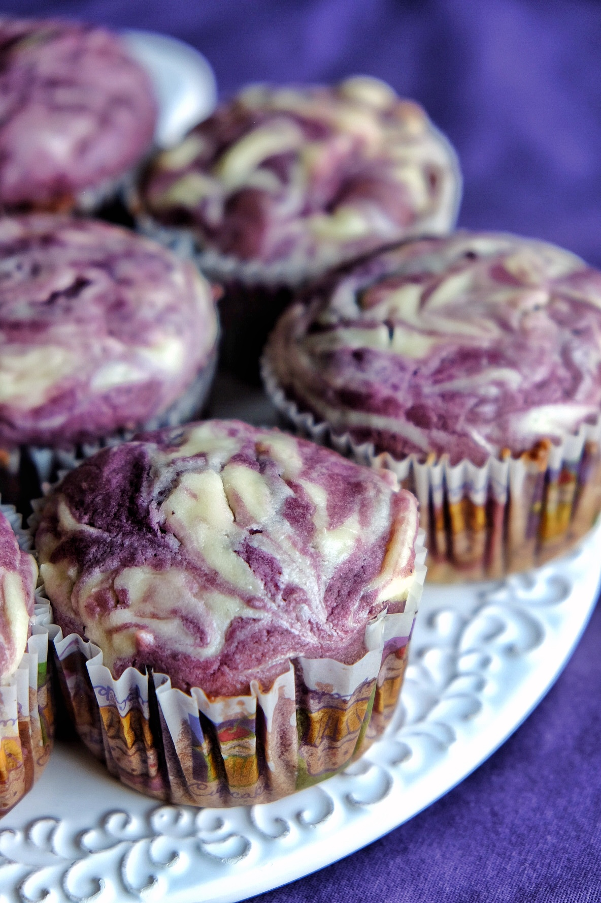

Ube Cheese Swirl Muffins

By: Jarelle Franchela Boac
These ube cheese swirl muffins are inspired by my Filipino roots and favorite childhood dessert: ube ensaymada. The ube cake is super moist and the flavor of the cream cheese compliments its sweetness. Most of all, it is easy to make!
This recipe takes some elements from these pumpkin cream cheese swirl muffins. If you're interested in those, check it out, as well!
Hope you enjoy, and make sure to check out our Instagram page @fourhungryasians so that you are notified everytime a new recipe is out!
Ingredients
Ube Muffin
- 1 3/4 cups all purpose flour
- 1 teaspoon baking soda
- 1/2 teaspoon salt
- 1/2 cup of milk
- 2 cups of ube halaya (mine was already very sweet)
- 1/2 cup granulated sugar
- 2 large eggs
- 1/2 cup vegetable oil
- 1/4 teaspoon vanilla extract
Cheese Swirl
- 8 oz cream cheese
- 1/4 cup granulated sugar
- 1 large egg yolk
Instructions
Prep time should only take 10-15 minutes!! And including baking time it should only take around 30-35 minutes.
- Preheat the oven to 375°F.
- In a medium bowl, whisk flour, baking soda and salt and set aside to combine later with the wet ingredients.
- In a large bowl, mix together ube halaya, sugar, eggs, vegetable oil and vanilla extract.
- Slowly whisk in the dry mixture until only some ube halaya lumps are visible.
- Place paper baking cups into muffin pan and fill each cup with the mixture until 1/2 full.
- In a medium bowl, beat cream cheese until smooth. Add in sugar and egg yolk. Beat until well combined.
- Top each muffin with about 1 teaspoon of cream cheese mixture (this will vary on how much of the ube swirl you want on the top).
- Spread more of the ube mixture on top of this cream cheese mixture until the cup is 3/4 full.
- Finally, top each muffin with about 1 teaspoon of cream cheese mixture and swirl the cream cheese with the ube using a toothpick until you get the pattern you desire. Don't worry about smoothing out the top as it will smooth out during the baking process.
- Bake muffins for 16-19 minutes, or until a toothpick inserted in the center comes out clean.
- Eat warm or chilled.Store in the fridge.